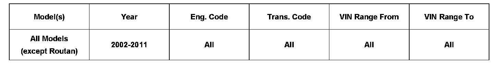
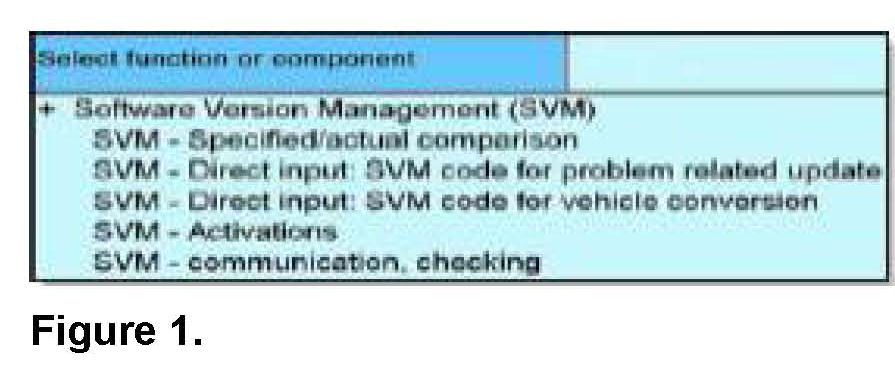
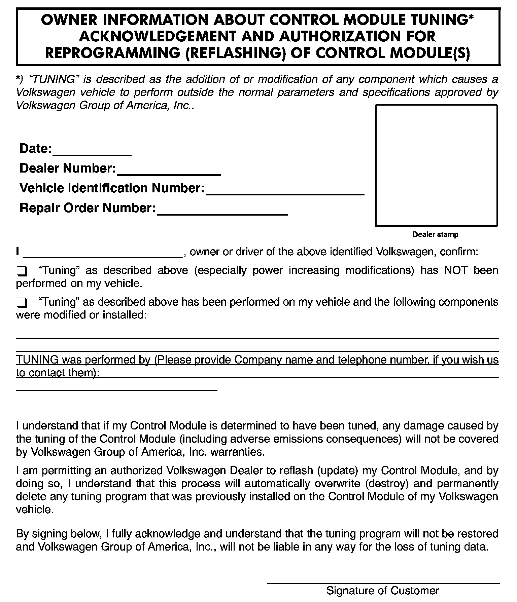
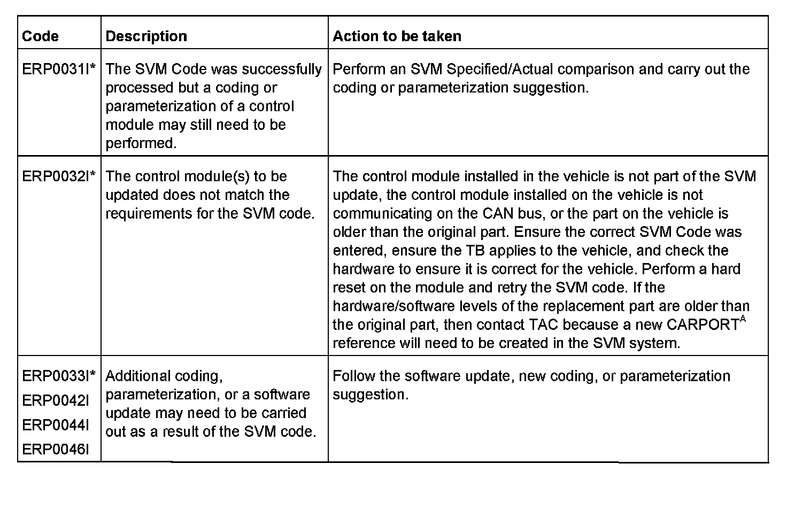
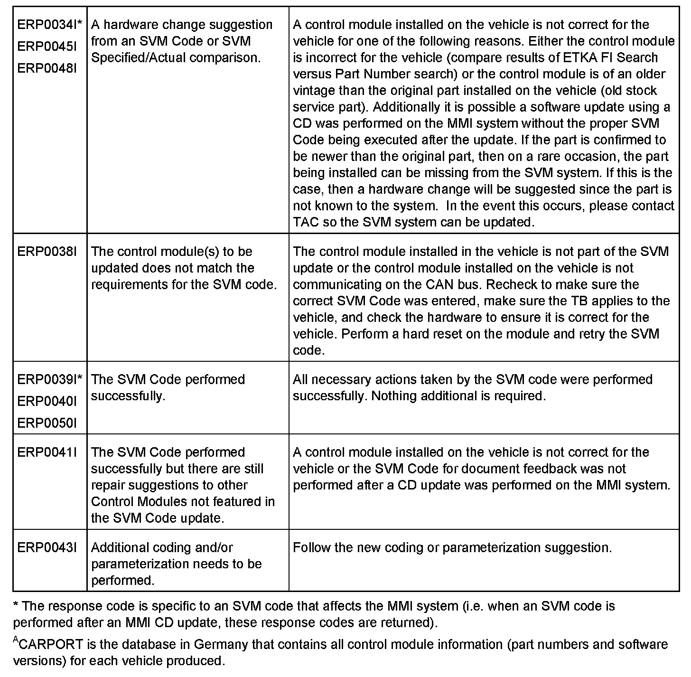

Computers/Controls - Software Version Management Info.
01 10 05April 1, 2010
2014603 Supersedes T.B. Group 01 number 08-36 dated Dec. 10, 2008 due to additional SVM function information and to include Response Codes with explanation.

Vehicle Information
Condition
Software Version Management
This Technical Bulletin details the general process for carrying out a Software Version Management (SVM) software update for any Technical Bulletin/RVU.
Troubleshooting information is included in the Additional Information Section.

SVM is a function within GFF with the options illustrated in Figure 1.
SVM is a process to update the programming in flashable (re-programmable) control modules and/or to document changes in software levels in Volkswagen vehicles. This system uses the VAS 5051B, VAS 5052, VAS 5052A or VAS 6150 diagnostic tools to send vehicle-specific data to the SVM database, to download instructions from the SVM database, and to program control modules for identified software updates.
The technician must first diagnose the condition in the vehicle and find a Technical Service Bulletin that describes that condition. This conditional bulletin specifies the appropriate Unit Code (Action Code) for the programming update. SVM eliminates the need to wait for Flash CDs to be sent to the dealer and problems such as scratched or missing discs, and allows the updates to be performed faster and more efficiently at the dealership.
Note:
An Update Programming procedure (flash) may overwrite any "TUNED" ECM or TCM programming. A "TUNED" ECM or TCM is described as any ECM or TCM altered so as to perform outside the normal parameters and
specifications approved by Volkswagen Group of America, Inc.
Current Tuned ECM or TCM requirements:
If you encounter a vehicle with a "Tuned" ECM or TCM, your dealership must do the following before performing any procedure that updates ECM or TCM programming:
^ Notify the owner that their ECM or TCM was found to have been tuned
^ Notify the owner any damage caused by the tuning of the ECM or TCM (including any adverse emissions consequences) will not be covered by Volkswagen of America, Inc. warranties.

^ Obtain the owners written consent (see Control Module Tuning form) for any requested repair under warranty or outside warranty that requires flashing, which will automatically overwrite the "Tuned" program.
Production Solution
No production change required.
Service
1. Ensure the Technical Bulletin stating the condition in the vehicle applies to the customer concern and the operator has a valid GeKo user ID and password. Only perform operations explicitly stated in the Technical
Bulletin or RVU.
2. Ensure that the following tester requirements are met:
^ VAS 5051A Minimum Base CD Version 15.00 installed
^ VAS 5051B/5052 Minimum Base CD Version 15.0 installed
^ Minimum Brand CD Version 15.96 installed regardless of tester used
^ VAS 5051X is plugged into a 110V AC Power supply at all times
^ Connect 5051B and 5052 to the Local Network
^ Connect 5051A to the Local Network before tester startup
Note:
Prior to launching VAS-PC application and starting control module update process, confirm tester screen saver and power settings in accordance with Special Tools and Equipment - Service Information Document # VSE-08-18. Failure to do so may result in the tester entering power save mode during data transfer, and subsequent control module failure.
When using a VAS 5051B or VAS 5052A tester in conjunction with a VAS 5054A wireless transmitter head for a flash procedure, please connect a USB cable between the transmitter head and the tester. Failure to do so may lead to errors during the flash procedure.
3. Ensure the following vehicle requirements are met:
^ Connect vehicle to a powered Volkswagen approved Midtronics/InCharge 940 (INC-940) tester/charger
^ Battery MUST have, and MUST maintain a minimum no-load charge of 12.5V
^ Turn off the radio and all other accessories, and when necessary, switch running lights off
^ Turn off any appliances with high electromagnetic radiation (i.e. mobile phones)
4. The Owner's Control Module Tuning Consent Form has been completed as necessary.
5. In the VAS Tester enter into GFF program. Allow GFF to interrogate all control modules before proceeding.
6. Address or record all DTCs related to a customer concern before continuing. Sporadic communication DTCs will be created during the flash procedure and must be erased with all other sporadic DTCs by GFF after exiting the flash test plan.
Note:
If GFF does not interrogate all control modules, manually select and interrogate remaining modules before proceeding
7. Enter the SVM test plan by selecting the following inside GFF: Go to >> Function/Component Selection >> Software Version Management >> Adapting Software.
8. Follow the on screen prompts for the SVM update procedure and enter the SVM Unit Code (Action Code) found in the Conditional Technical Bulletin when requested.
9. Enter your GeKo ID when requested and data will be transmitted to the SVM server, which will respond with instructions to continue. The procedure may include one, or any combination of the following for one or multiple control modules as specified in the Technical Bulletin/RVU:
^ Check a Control Module
This will occur when SVM does not recognize the control module as valid for the vehicle. If there is no customer concern and no DTC regarding this control module, report the issue to the Technical Helpline.
^ Update a Control Module (flash)
^ Code a Control Module
10. During the flash procedure, an estimated time will be shown which is not used for actual SRT calculation at this time.
ALWAYS continue until the following text is displayed: "Vehicle conversion/update has been successfully performed. The changes have been stored in the system. Thank you".
Tip:
The SVM Process must be completed in it's entirety so the database receives the update confirmation response.
A warranty claim may not be reimbursed if there is no confirmation response to support the claim or action is carried out that is not explicitly stated in the Technical Bulletin/RVU.
11. Verify that all steps or special procedures mentioned in the Technical Bulletin/RVU have been carried out, and then finish the test plan and Exit GFF via the Go to button. Answer the Warranty questions accordingly and print out or save the Diagnostic Log when prompted.
Response Codes


SVM can provide a response code with a repair suggestion or after a successful repair. The response code will appear in the diagnostic log.
Warranty
Information only.
Additional Information
Checking for Internet Connectivity:
With the tester connected to the internet, go to Guided Functions >> All remaining vehicles >> Immobilizer I & II >> Online System Test.
Technical Helpline Contact Requirements:
Contact the Technical Helpline via the Volkswagen Technical Assistance (VTA) system in ElsaWeb or phone in cases where there is a clear technical issue with the vehicle or response from the SVM system.
Always include the following information in the VTA contact.
^ SVM Action Code attempted
^ Control Module(s), affected part numbers and software levels, Address word(s) that are in question
^ The complete tester diagnostic log from the GFF session attached to the VTA helpline ticket Further Tester Assistance:
If any of the listed troubleshooting procedures and/or checks result in errors or yield no solution and further assistance is required, please follow these steps:
1. Utilize the information contained in the Function Description button in the tester at the point of the error
2. Report the problem to the shop network administrator for further investigation
3. Contact the responsible support team for further assistance:
^ Service Department Applications: (this includes: GeKo, ElsaWeb, Hotline Channel, Telediagnosis, and Service Net)
^ VAS 5051/5052 Software Subscriptions
^ VAS 5051/5052 Software Support
All part and service references provided in this Technical Bulletin are subject to change and/or removal. Always check with your Parts Dept. and Repair Manuals for the latest information.